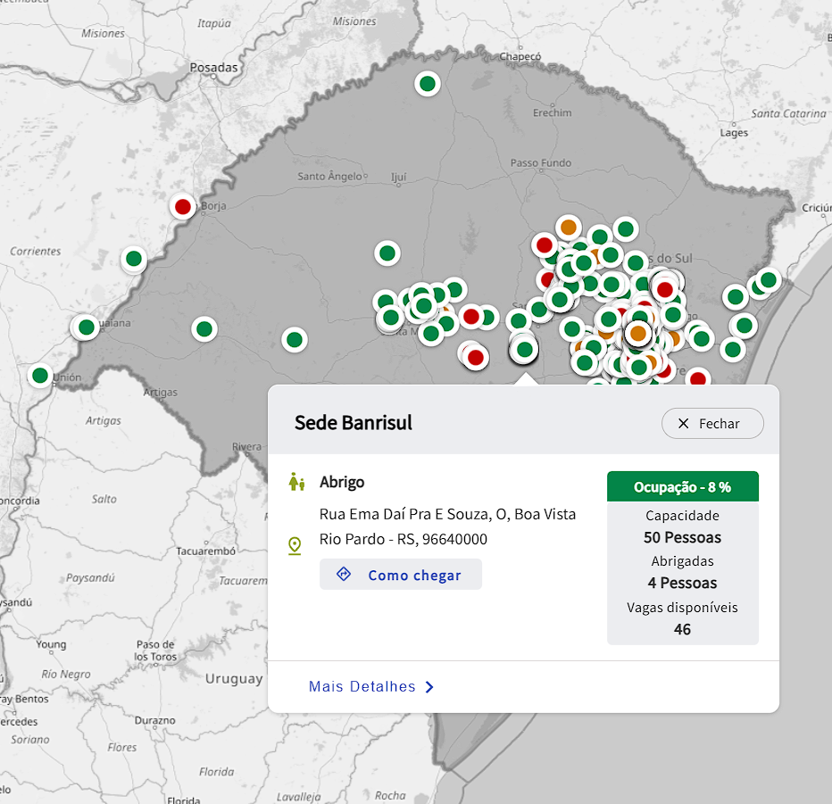

 Na imagem acima, você pode visualizar um dos endereços em que uma de nossas equipes de voluntários estão atuando. Caso você precise ser acolhido em outro local, clique no botão abaixo: Procurar abrigo